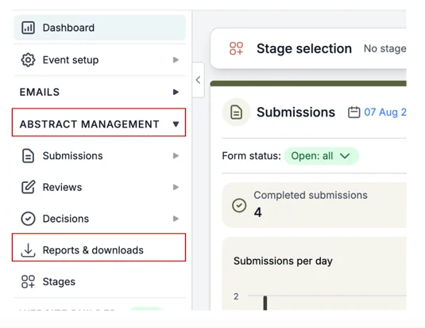
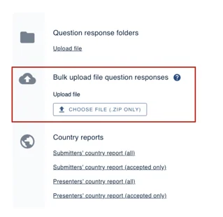
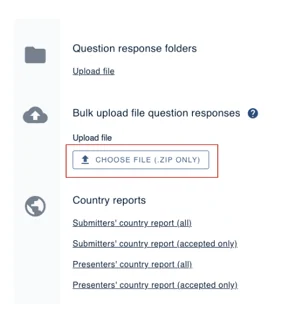
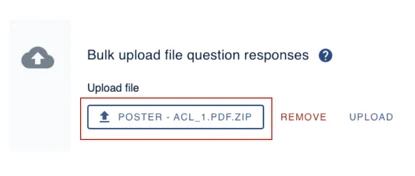

Bulk upload and automatically assign files
This article will provide instructions on how to bulk upload files (for example, posters) and automatically assign them to the correct submission/abstract.#
This information is for Admins ONLY!
Please note: To be able to accept uploaded files such as posters, this question has to be added to the submission form.
Click here and scroll down to ‘Adding Questions’ to find out how to do this.
From your main dashboard, navigate to the left-hand column and click on Abstract Management ➞ Reports & Downloads.

On the next screen, scroll down to Bulk upload file question responses.

Please note: In order to upload files in bulk and assign them automatically to the right submission, the files upload have to be converted to a Zip file and must include the Submission I.D number in the following format:
Submission_75.doc or Submission_75.pdf
You must name the file (Submission), include an underscore (_) add the submission ID number (75) and save it as either a .doc or .pdf**
Next, click on the Choose File button and select the file you wish to upload.

You’ll now see your selected file has been uploaded.

Should you require any further assistance, please contact our support desk via our Contact Form.
Did this page solve it?
Thanks — this helps us fix it.
Didn't solve it? Ask our support team
No question is too small, and there's no charge for asking. Raise a ticket and someone who knows the software will pick it up.